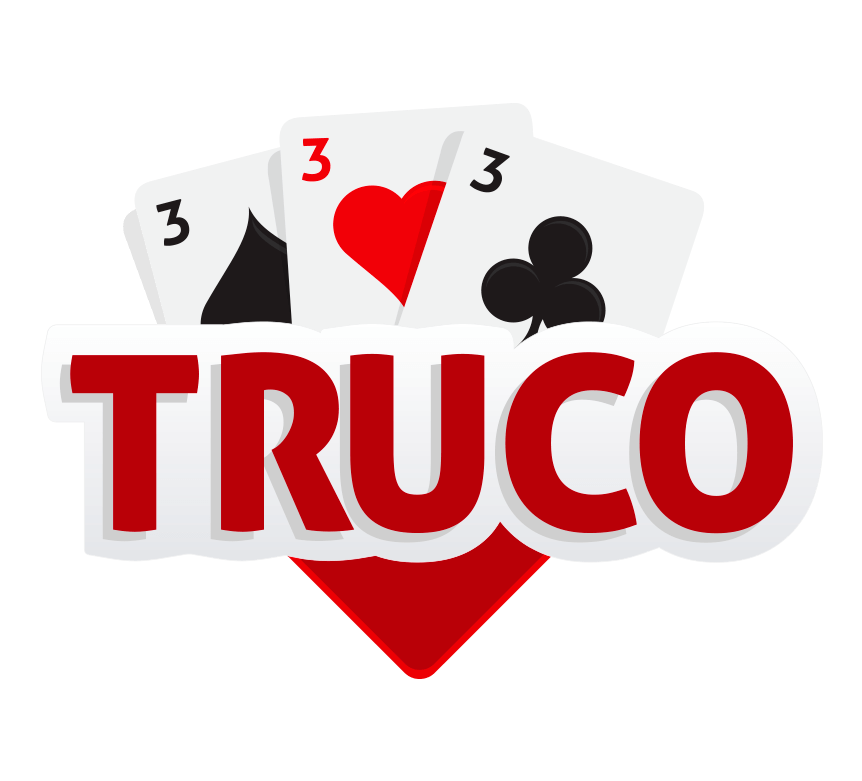

Marcador de Truco com ATmega328P
Desafio: Desenvolver um placar digital e portátil para jogos de truco, substituindo a marcação manual. O principal desafio técnico foi implementar a lógica de multiplexação de display (time-division multiplexing) para controlar um display de 7 segmentos duplo diretamente com o ATmega328P, utilizando transistores para a comutação dos dígitos.
Tecnologias: Microcontrolador ATmega328P, Programação C++ (Arduino IDE), Display de 7 Segmentos (Duplo), Transistores (para multiplexação), Componentes Eletrônicos (capacitores, resistores).
Ver Projeto